当山は真言宗豊山派の寺院で萱田山 観音院 長福寺と号し、本尊は木造阿彌陀如来坐像です。
創建は室町時代後期の長享元年（1487年）で、伯円和尚により開基されました。
天正2年（1574年）の火災にて焼失しましたが、
その後、大坂の陣の翌年の元和２年（1616年）に再建されました。
また、昭和5８年に弘法大師1500年御遠忌事業として、本堂・客殿の整備を行い、現在に至っております。
朱塗りの特徴のある山門から「萱田の赤寺」と呼ばれ、
『八千代ふるさと50景』の一つとして地元の方々に親しまれております。
なお、境内には八千代八福神の一つで長寿をさずける神である寿老人もお祀りしています。
当山は檀家さんや近隣の皆様方の思いを共有できる開かれたお寺を目指し、
夏の子ども研修会、秋のお彼岸には音楽会や落語会などを行い、
身近な存在となれるように日々努力をしております。
山門の朱塗りと共に、山内には初春の牡丹、梅、南天、桜、初夏には紫陽花、睡蓮、
初秋には彼岸花やもみじ、銀杏の紅葉などが楽しめ、一年中彩あc特徴です。

宗 派：真言宗豊山派
総本山：豊山 長谷寺 奈良県桜井市初瀬
祖 師：宗 祖 弘法大師 空海上人
中興祖 興教大師 覚鑁上人
派 祖 専誉僧正
-
開 宗
真言密教は、平安初期に弘法大師によって中国からもたらされ、わが国で開宗されました。その特徴は理性と感性の両面から宗教的な安心を得られるという点にあります。
-
教 え
教えの中心はマンダラ思想です。世の中にはいろいろな宗教や思想がありますが、よく観察してみると一番底に共通の原点があります。この原点が大日如来という仏様です。一切の諸尊は、それがお薬師さま、観音さま、お地蔵さま、お不動さまであれ、すべて大日如来の身を変えたお姿（応化身）なのです。
したがって、もとめるところは広い視野で物を見ながら深く考えて、敬虔に力強く、人生を生き切り、平和な社会を作ることです。 -
読誦するお経
般若理趣経・陀羅尼・般若心経・観音経などをお誦み致しております。
参考資料：宗派配布「このお寺の宗旨」より
-
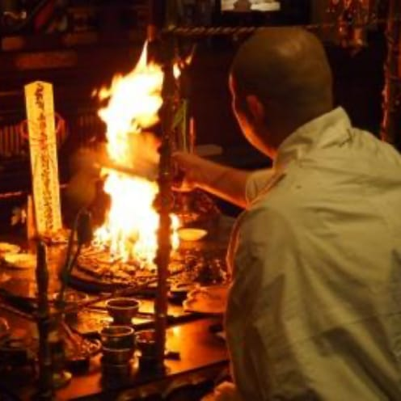 -
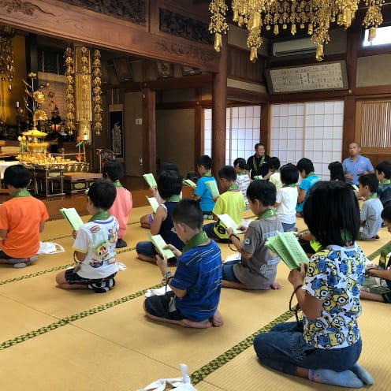 -
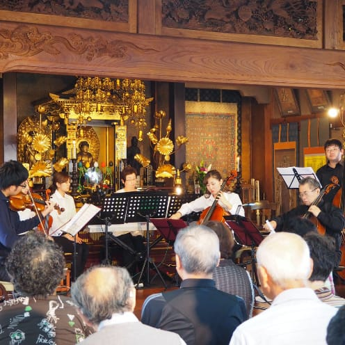 -
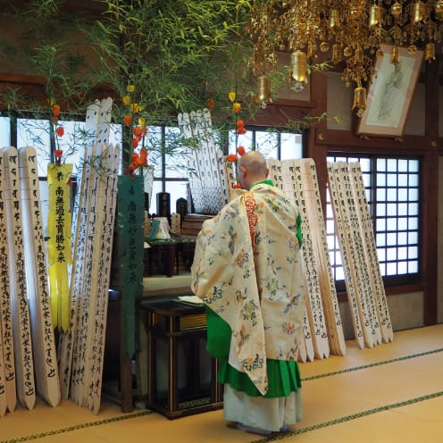
長福寺の檀家様にご利用いただけます。
長福寺では本堂でのご葬儀をお檀家様にお勧めしております。
ご希望・ご都合に合わせて執り行いますのでご相談ください。
詳細は当寺までお問い合わせください
-
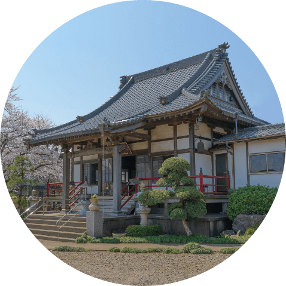 本堂 -
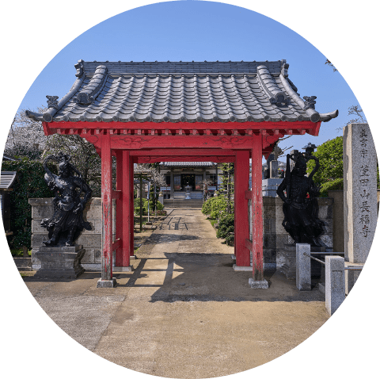 山門 -
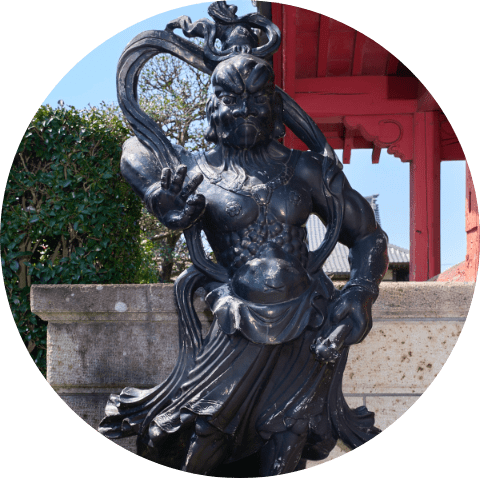 仁王像 -
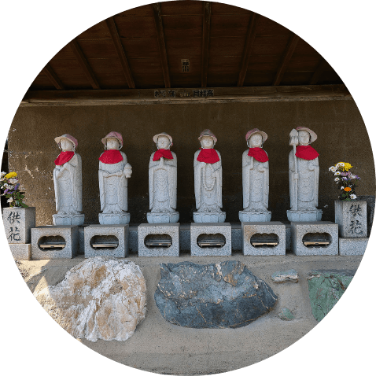 新しい六地蔵 -
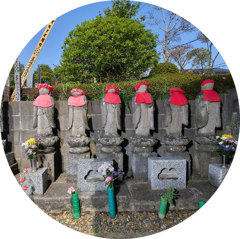 古い六地蔵 -
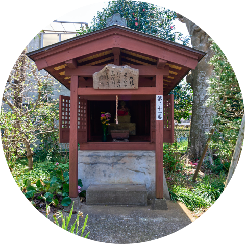 大師堂 -
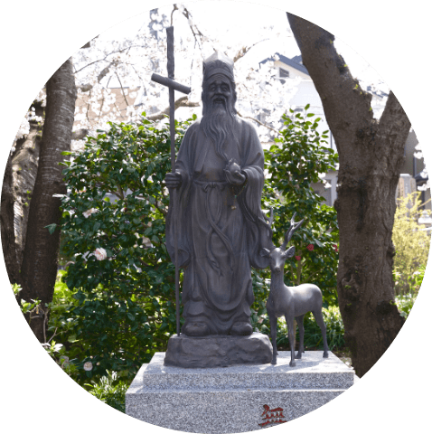 寿老人 -
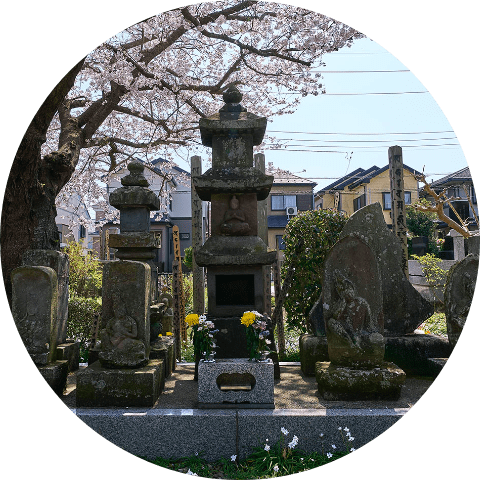 石造二十三夜・日記念仏塔（層塔）
八千代市民俗文化財 -
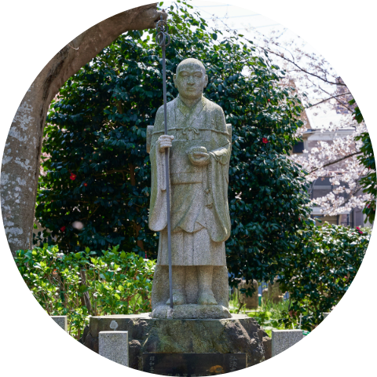 弘法大師像 -
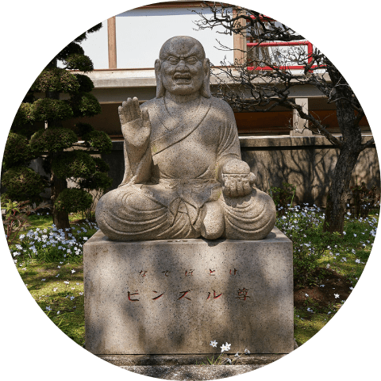 ビンズル尊 -
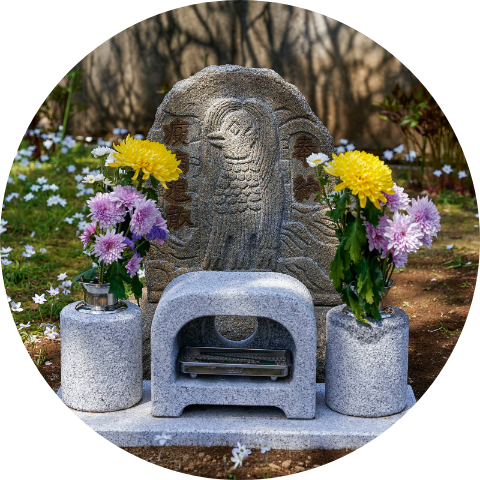 アマビエ様 -
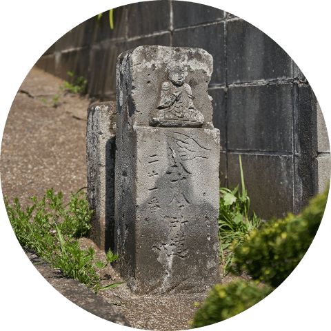 大師道標